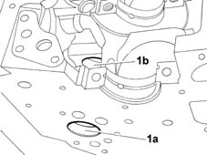
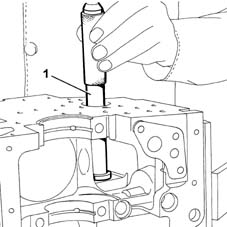
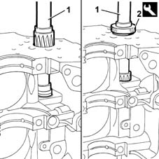

1012B20 auxhiliary shaft crank case bushes - replace following operation 1004e20
- Path
- Procedures > 10 ENGINE UNIT > 1012 ENGINE CRANKCASE > 1012B engine crank case bushes and bearings > 1012B20 auxhiliary shaft crank case bushes - replace following operation 1004e20
- Kind
- repair procedure (removal / refitting; the operation number is the code)
- Applies to
- engines: 1.6 16v; all production periods
- Interactive page
- https://sloeber94.github.io/elrnDB-fMltpl/en/#/2892337
Applies to: engines: 1.6 16v; all production periods
 Removing
Removing
 Refitting
Refitting1. Check that there are no signs of grooves, excesive wear or seizing on the bush housings (1a) and (1b) for the oil pump auxiliary shaft.
Check that the diameter of the bushes is within the recommended values.
 | Measurement | Value | |
|---|---|---|---|
- | Bush diameter (mm) | External | 35.664÷35.684 |
Internal | 32.000÷32.020 | ||
If the values measured do not correspond to the recommended values, replace the bushes.

Applies to: engines: 1.6 16v; all production periods
1. Then proceed with the operation of removing the two bushes from the cylinder block/crankcase using a suitable sized ordinary drift.

Applies to: engines: 1.6 16v; all production periods
Refitting
RemovingProceed with fitting the two oil pump auxiliary shaft bushes using a suitable sized ordinary drift.
1. Using a suitable reamer, remove the machining residues from both bushes.
2. Using the adaptor when reaming the internal bush because the outer diameter of the upper bush is larger and the reamer would not work properly.
 | Name | Country |
|---|---|---|
2 | Adaptor | 1.860.914.000 |

Applies to: engines: 1.6 16v; all production periods
Removing
RefittingRemoval procedure.
| Measurement | Value | |
|---|---|---|---|
- | Bush diameter (mm) | External | 35.664÷35.684 |
Internal | 32.000÷32.020 | ||
Applies to: engines: 1.6 16v; all production periods
Refitting
RemovingRefitting procedure.